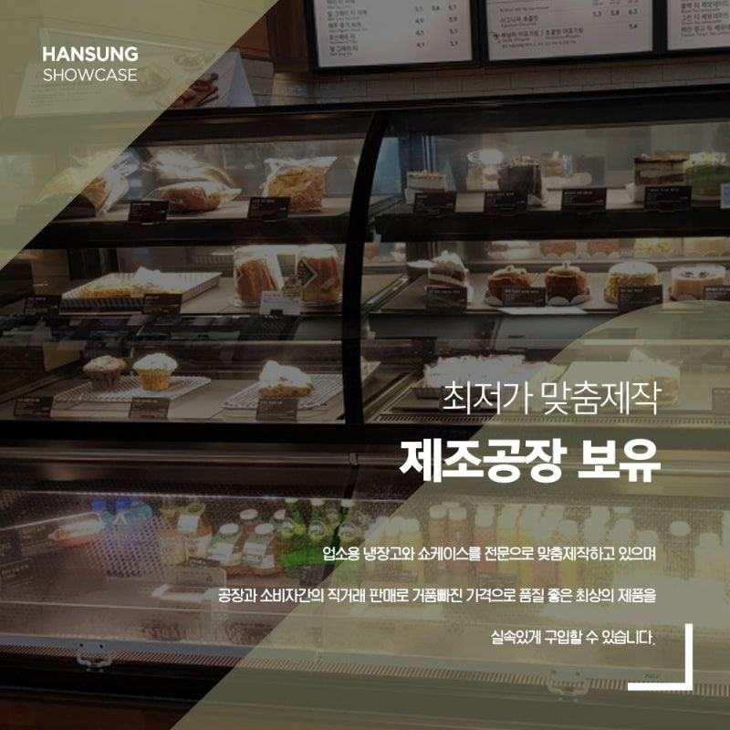
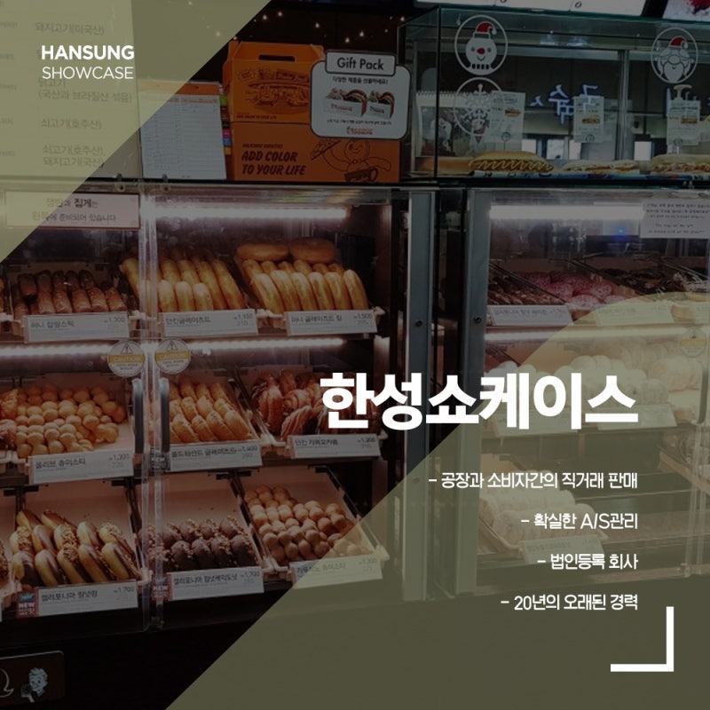
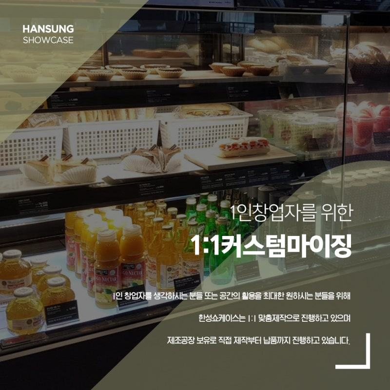
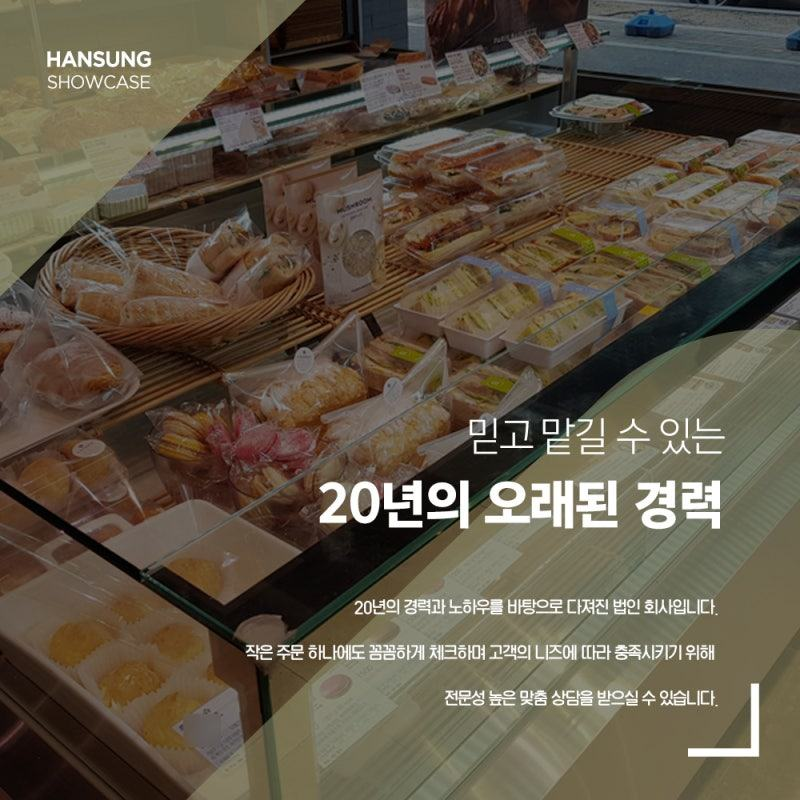
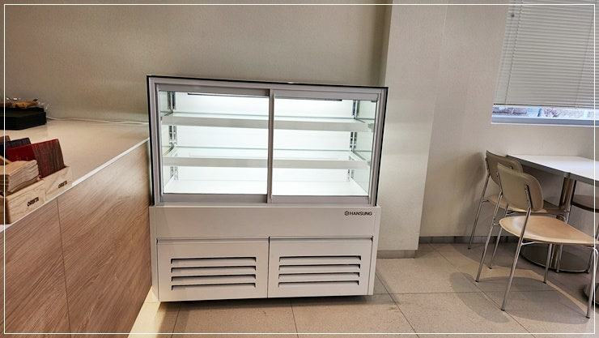
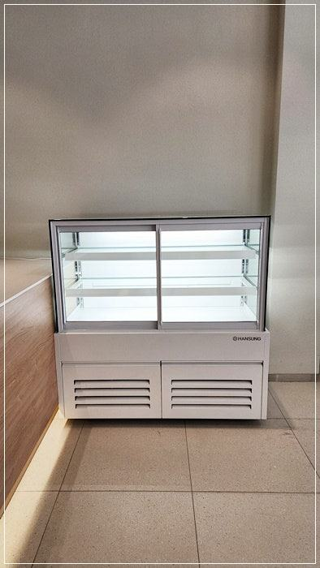

제과쇼케이스
제과쇼케이스 업체 고를 때 상담에서 물어볼 다섯 가지

제과쇼케이스 업체는 직접 설계·제작하는 곳인지, 빵과 케이크의 수분을 지키는 냉각 구조와 결로 대책을 설명할 수 있는지, 설치와 사후 A/S를 같은 곳에서 책임지는지를 기준으로 고르시면 됩니다. 상담에서 이 세 가지에 구체적으로 답하지 못한다면 다른 곳과 비교해 보시는 편이 안전합니다.
안녕하세요. 베이커리와 디저트 카페의 진열장을 맞춰 만드는 한성쇼케이스입니다.
빵집 오픈을 앞둔 사장님들은 인테리어 업체, 오븐 업체, 쇼케이스 업체까지 한꺼번에 견적을 받으시다 보니 비교 기준이 흐려지기 쉽습니다.
사진으로 보면 다 비슷하게 예쁜데, 어디에 맡겨야 할지 판단이 서지 않으시죠.
제과쇼케이스는 케이크 생크림, 크루아상 결, 타르트 과일까지 진열 상태가 그대로 매출로 이어지는 장비입니다.
겉모습보다 업체가 이 상품들을 얼마나 이해하고 있는지가 결과를 가릅니다.
오늘은 업체 상담 자리에서 꼭 물어보셔야 할 질문과, 답변에서 무엇을 확인하면 좋은지 정리해 드리겠습니다.
1. 직접 만드는 곳인지 물어보세요
쇼케이스 업체는 크게 직접 공장을 운영하며 설계·제작하는 곳과, 만들어진 기성품을 받아 파는 유통 업체로 나뉩니다.
유통 업체는 정해진 규격 안에서만 고를 수 있고, 문제가 생기면 제조사에 다시 문의해야 해 처리가 늦어지기 쉽습니다.
직접 제작하는 곳은 매장 폭에 맞춘 사이즈, 프레임 색상, 조명 색, 단 수까지 상담 내용대로 바꿀 수 있습니다.
중간 유통 단계가 없어 같은 사양이라도 비용 부담이 줄어드는 경우가 많습니다.
- 제작 공장을 직접 운영하는지 물어보세요.
- 사이즈·색상·조명 변경이 어디까지 되는지 확인하세요.
2. 빵과 케이크를 아는 업체인지
케이크는 차갑게, 빵은 마르지 않게 보관해야 하는데 이 두 가지는 냉장고 입장에서 서로 반대 방향의 요구입니다.
찬 바람이 직접 닿으면 빵 표면이 금방 마르고, 습기가 많으면 유리에 김이 서려 상품이 안 보입니다.
그래서 상담할 때 결로를 어떻게 막는지, 냉기가 상품에 직접 닿지 않도록 어떤 순환 구조를 쓰는지 물어보세요.
히팅 유리나 이중 유리 같은 대책을 구체적으로 설명하는 업체라면 제과 현장을 잘 아는 곳입니다.
- 결로 방지 대책을 구체적으로 물어보세요.
- 케이크용과 상온 빵용 구획을 나눌 수 있는지 확인하세요.


3. 디자인 상담을 누가 하는지
제과쇼케이스는 매장의 얼굴이라 인테리어와 따로 놀면 어색해집니다. 상담할 때 매장 사진이나 도면을 보고 프레임 색과 조명 색을 함께 제안해 주는지, 상담 내용을 반영한 도면을 먼저 보여 주는지 확인해 보세요.
케이크는 주백색 조명 아래에서 생크림과 과일 색이 자연스럽게 보이고, 화이트 프레임은 제과 매장의 밝은 분위기와 잘 어울립니다.
이런 조합을 업체가 먼저 설명해 줄 수 있는지도 판단 기준이 됩니다.
4. 설치와 A/S를 누가 책임지는지
제작은 한 곳, 배송은 다른 곳, 설치는 또 다른 기사가 맡으면 일정이 어긋나거나 설치 후 문제가 생겼을 때 책임이 흐려집니다.
제작부터 배송, 설치까지 한 업체가 맡는지 꼭 물어보세요.
제과점은 새벽부터 빵을 굽고 진열하는 업종이라 쇼케이스가 멈추면 그날 장사에 바로 타격이 옵니다. 무상 A/S 기간, 접수 방법, 우리 지역에 서비스 센터가 있는지를 계약 전에 확인해 두세요.
- 제작·배송·설치를 한 곳이 맡는지
- 무상 A/S 기간과 접수 방법
- 가까운 지역 서비스 센터 유무
체크리스트
- 직접 제작 공장 운영 여부
- 사이즈·색상·조명 맞춤 범위
- 결로 방지와 냉기 순환 구조 설명
- 디자인 도면 사전 확인
- 설치와 A/S 책임 주체
현장에서 자주 보는 경우: 기성품만 보다가 답답해지실 때
베이커리를 새로 준비하시는 사장님들이 매장에 어울리는 제과쇼케이스를 찾다가, 대부분 기성품만 고를 수 있어 답답하다고 연락 주시는 경우가 많습니다.
원하는 사이즈와 인테리어에 맞는 디자인을 찾기 어렵기 때문입니다.
저희는 기성품을 유통하지 않고 오랜 기간 운영해 온 제작 공장에서 직접 만들기 때문에, 원하시는 사이즈와 설치 장소에 어울리는 디자인으로 제작해 드립니다.
맞춤이라 비용이 많이 들 거라 걱정하시는 분도 계시지만, 유통 마진이 없는 구조라 부담을 줄일 수 있고 처음 맡기시는 분께도 과정을 하나씩 안내해 드립니다.







자주 묻는 질문
제과쇼케이스는 단 수를 줄여서도 만들 수 있나요?
가능합니다. 매장 높이와 진열 상품에 따라 1단부터 여러 단까지 맞춰 제작할 수 있습니다.
상담할 때 무엇을 준비하면 좋을까요?
설치할 자리의 실측 치수, 매장 인테리어 사진, 주로 진열할 상품 종류를 준비해 주시면 상담이 빨라집니다.
원하시는 프레임 색이나 조명 느낌이 있다면 참고 사진도 함께 보내 주세요.
지방 매장도 설치와 A/S가 되나요?
한성쇼케이스는 제작 후 직접 배송·설치하며, 전국 240여 개 A/S 센터로 설치 이후 관리도 지원합니다.
매장 조건에 맞춰 만드는 한성쇼케이스
원하시는 제품 사진과 설치할 공간 사진만 보내 주셔도 매장에 맞는 구성을 추천해 드립니다.
- 전국 240여 개 A/S 전담 센터 운영
- 본사 대량 자재 매입으로 품질 대비 합리적인 가격
- 유럽제·삼성 냉각 콤프레셔 적용
- 국내 최초 쇼케이스 전문 디자이너 상주
매장 폭과 원하는 진열 구성을 알려 주세요. 실측과 견적을 안내해 드립니다.
031-986-2458